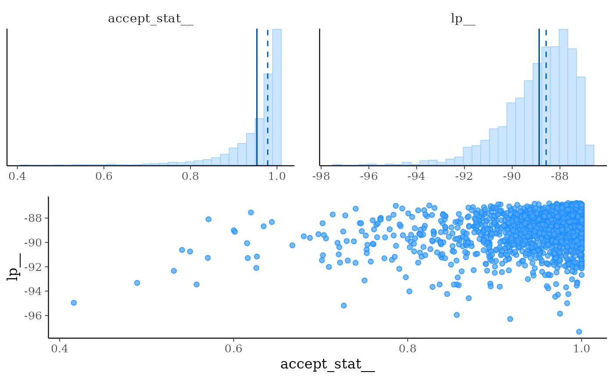
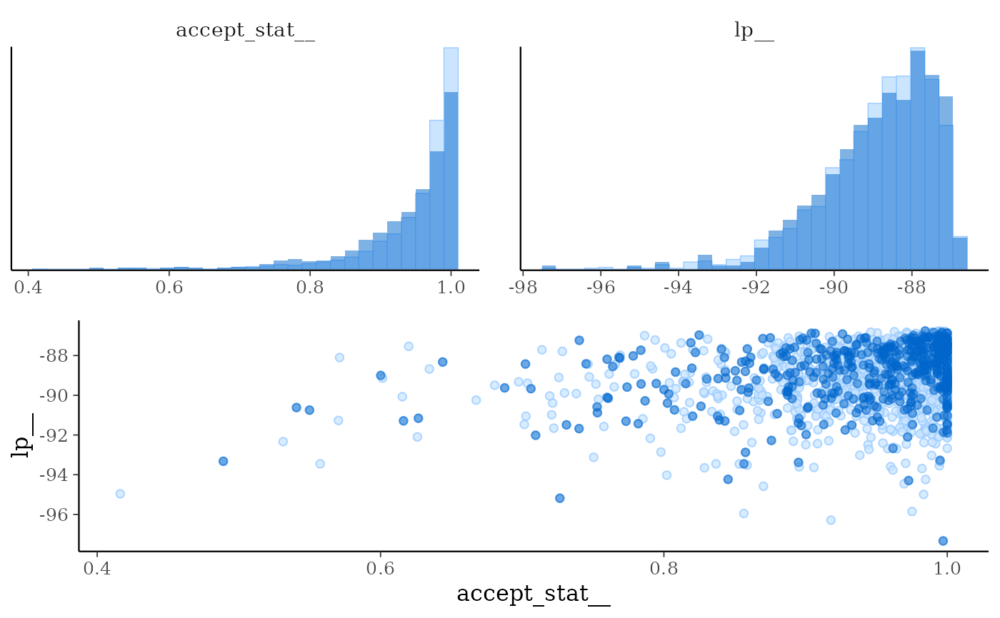
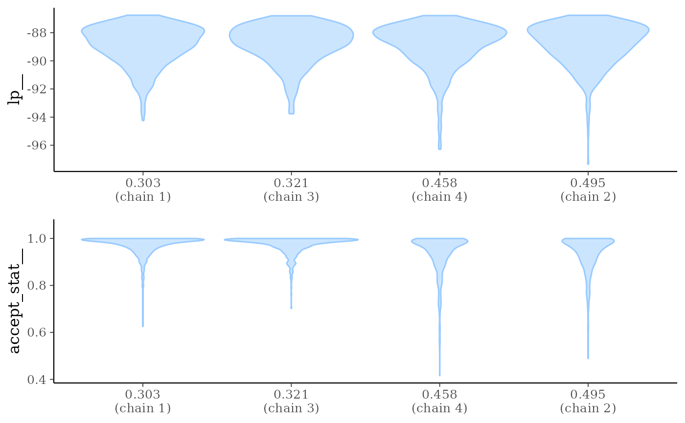
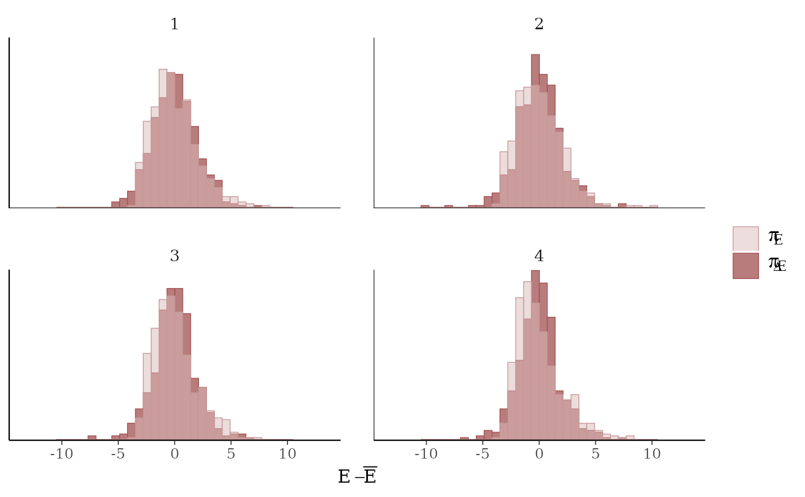
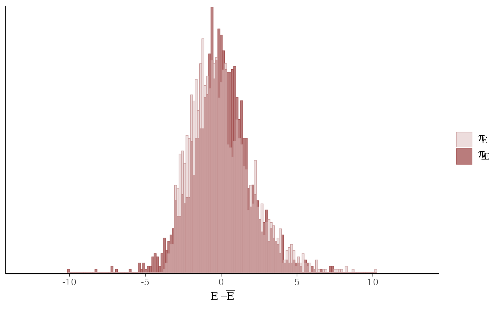
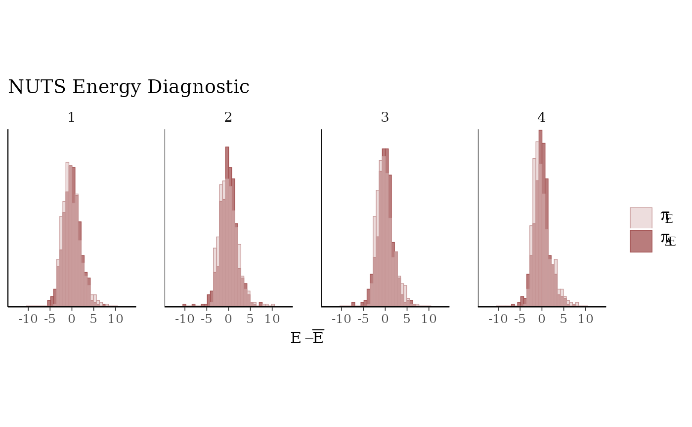
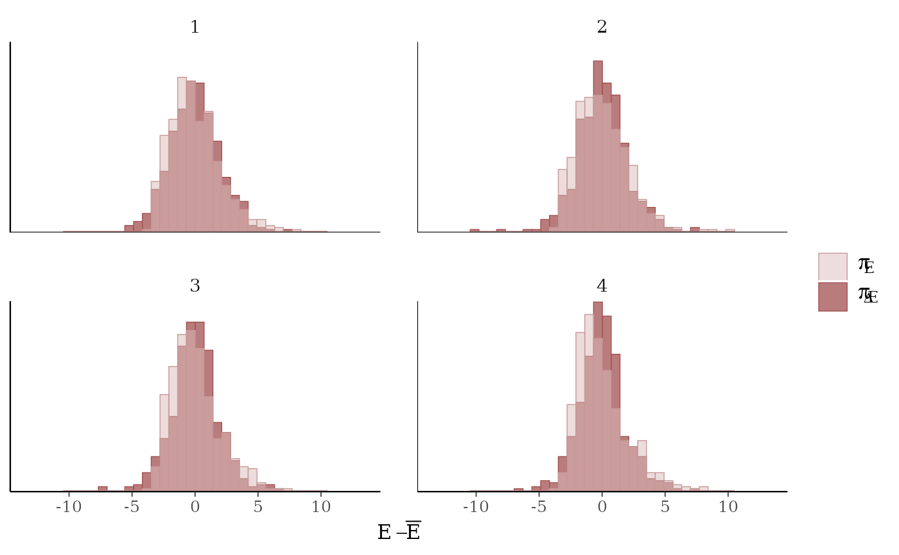
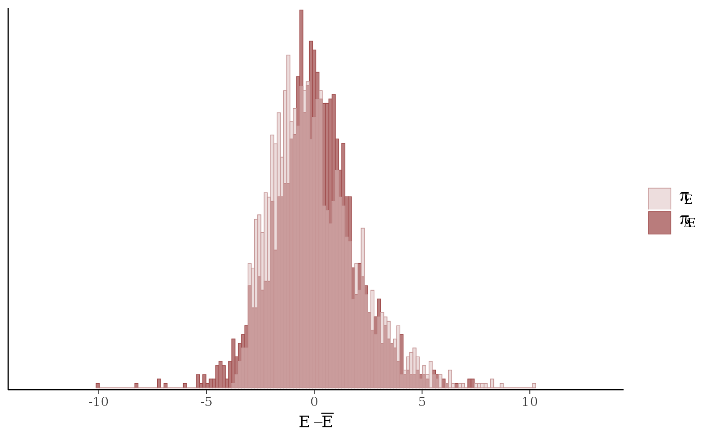
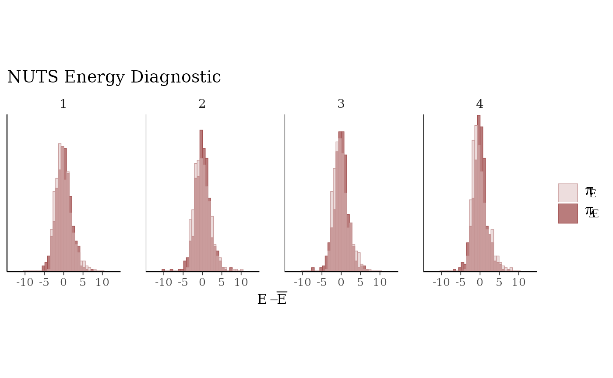

Diagnostic plots for the No-U-Turn-Sampler (NUTS), the default MCMC algorithm used by Stan. See the Plot Descriptions section, below.
Usage
mcmc_nuts_acceptance(
x,
lp,
chain = NULL,
...,
binwidth = NULL,
bins = NULL,
breaks = NULL
)
mcmc_nuts_divergence(x, lp, chain = NULL, ...)
mcmc_nuts_stepsize(x, lp, chain = NULL, ...)
mcmc_nuts_treedepth(x, lp, chain = NULL, ...)
mcmc_nuts_energy(
x,
...,
binwidth = NULL,
bins = NULL,
breaks = NULL,
alpha = 0.5,
merge_chains = FALSE
)Arguments
- x
A molten data frame of NUTS sampler parameters, either created by
nuts_params()or in the same form as the object returned bynuts_params().- lp
A molten data frame of draws of the log-posterior or, more commonly, of a quantity equal to the log-posterior up to a constant.
lpshould either be created vialog_posterior()or be an object with the same form as the object returned bylog_posterior().- chain
A positive integer for selecting a particular chain. The default (
NULL) is to merge the chains before plotting. Ifchain = kthen the plot for chainkis overlaid (in a darker shade but with transparency) on top of the plot for all chains. Formcmc_nuts_stepsize(), chains are always plotted separately, andchainsimply highlights the selected chain. Thechainargument is not used bymcmc_nuts_energy().- ...
Currently ignored.
- binwidth
Passed to
ggplot2::geom_histogram(),ggplot2::geom_area(), andggdist::stat_dots()to override the default binwidth.- bins
Passed to
ggplot2::geom_histogram()andggplot2::geom_area()to override the default binning.- breaks
Passed to
ggplot2::geom_histogram()as an alternative tobinwidth.- alpha
For
mcmc_nuts_energy()only, the transparency (alpha) level in[0,1]used for the overlaid histogram.- merge_chains
For
mcmc_nuts_energy()only, should all chains be merged or displayed separately? The default isFALSE, i.e., to show the chains separately.
Value
A gtable object (the result of calling
gridExtra::arrangeGrob()) created from several ggplot objects,
except for mcmc_nuts_energy(), which returns a ggplot object.
Quick Definitions
For more details see Stan Development Team (2016) and Betancourt (2017).
accept_stat__: the average acceptance probabilities of all possible samples in the proposed tree.divergent__: the number of leapfrog transitions with diverging error. Because NUTS terminates at the first divergence this will be either 0 or 1 for each iteration.stepsize__: the step size used by NUTS in its Hamiltonian simulation.treedepth__: the depth of tree used by NUTS, which is the log (base 2) of the number of leapfrog steps taken during the Hamiltonian simulation.energy__: the value of the Hamiltonian (up to an additive constant) at each iteration.
Plot Descriptions
mcmc_nuts_acceptance()Three plots:
Histogram of
accept_stat__with vertical lines indicating the mean (solid line) and median (dashed line).Histogram of
lp__with vertical lines indicating the mean (solid line) and median (dashed line).Scatterplot of
accept_stat__vslp__.
mcmc_nuts_divergence()Two plots:
Violin plots of
lp__|divergent__=1andlp__|divergent__=0.Violin plots of
accept_stat__|divergent__=1andaccept_stat__|divergent__=0.
mcmc_nuts_stepsize()Two plots:
Violin plots of
lp__by chain ordered bystepsize__value.Violin plots of
accept_stat__by chain ordered bystepsize__value.
mcmc_nuts_treedepth()Three plots:
Violin plots of
lp__by value oftreedepth__.Violin plots of
accept_stat__by value oftreedepth__.Histogram of
treedepth__.
mcmc_nuts_energy()Overlaid histograms showing
energy__vs the change inenergy__. See Betancourt (2016) for details.
References
Betancourt, M. (2017). A conceptual introduction to Hamiltonian Monte Carlo. https://arxiv.org/abs/1701.02434
Betancourt, M. and Girolami, M. (2013). Hamiltonian Monte Carlo for hierarchical models. https://arxiv.org/abs/1312.0906
Hoffman, M. D. and Gelman, A. (2014). The No-U-Turn Sampler: adaptively setting path lengths in Hamiltonian Monte Carlo. Journal of Machine Learning Research. 15:1593–1623.
Stan Development Team. Stan Modeling Language Users Guide and Reference Manual. https://mc-stan.org/users/documentation/
See also
The Visual MCMC Diagnostics vignette.
Several other plotting functions are not NUTS-specific but take optional extra arguments if the model was fit using NUTS:
mcmc_trace(): show divergences as tick marks below the trace plot.mcmc_parcoord(): change the color/size/transparency of lines corresponding to divergences.mcmc_scatter(): change the color/size/shape of points corresponding to divergences.mcmc_pairs(): change the color/size/shape of points corresponding divergences and/or max treedepth saturation.
Other MCMC:
MCMC-combos,
MCMC-diagnostics,
MCMC-distributions,
MCMC-intervals,
MCMC-overview,
MCMC-parcoord,
MCMC-recover,
MCMC-scatterplots,
MCMC-traces
Examples
# \dontrun{
library(ggplot2)
library(rstanarm)
fit <- stan_glm(mpg ~ wt + am, data = mtcars, iter = 1000, refresh = 0)
np <- nuts_params(fit)
lp <- log_posterior(fit)
color_scheme_set("brightblue")
mcmc_nuts_acceptance(np, lp)
#> `stat_bin()` using `bins = 30`. Pick better value `binwidth`.

mcmc_nuts_acceptance(np, lp, chain = 2)
#> `stat_bin()` using `bins = 30`. Pick better value `binwidth`.
#> `stat_bin()` using `bins = 30`. Pick better value `binwidth`.

mcmc_nuts_divergence(np, lp)
mcmc_nuts_stepsize(np, lp)

mcmc_nuts_treedepth(np, lp)
 color_scheme_set("red")
mcmc_nuts_energy(np)
#> `stat_bin()` using `bins = 30`. Pick better value `binwidth`.
#> `stat_bin()` using `bins = 30`. Pick better value `binwidth`.

mcmc_nuts_energy(np, merge_chains = TRUE, binwidth = .15)

mcmc_nuts_energy(np) +
facet_wrap(vars(Chain), nrow = 1) +
coord_fixed(ratio = 150) +
ggtitle("NUTS Energy Diagnostic")
#> `stat_bin()` using `bins = 30`. Pick better value `binwidth`.
#> `stat_bin()` using `bins = 30`. Pick better value `binwidth`.

# }
color_scheme_set("red")
mcmc_nuts_energy(np)
#> `stat_bin()` using `bins = 30`. Pick better value `binwidth`.
#> `stat_bin()` using `bins = 30`. Pick better value `binwidth`.

mcmc_nuts_energy(np, merge_chains = TRUE, binwidth = .15)

mcmc_nuts_energy(np) +
facet_wrap(vars(Chain), nrow = 1) +
coord_fixed(ratio = 150) +
ggtitle("NUTS Energy Diagnostic")
#> `stat_bin()` using `bins = 30`. Pick better value `binwidth`.
#> `stat_bin()` using `bins = 30`. Pick better value `binwidth`.

# }